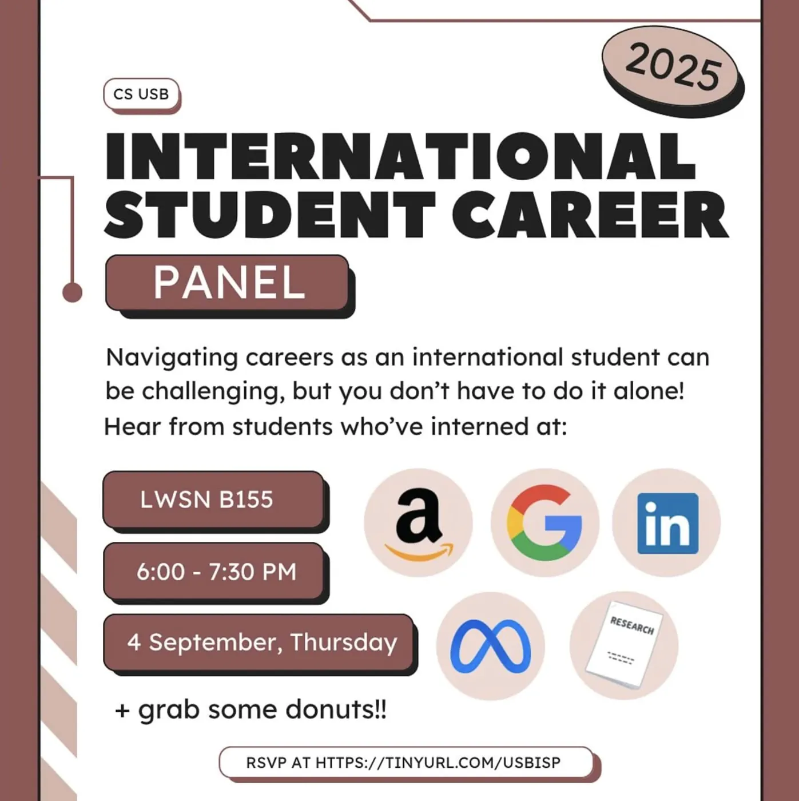
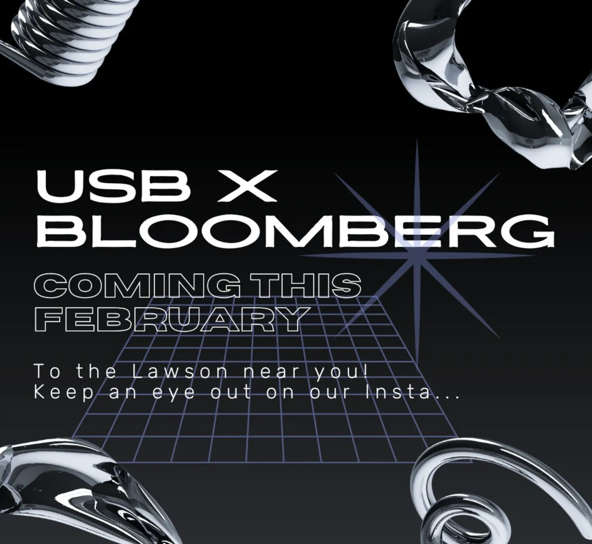
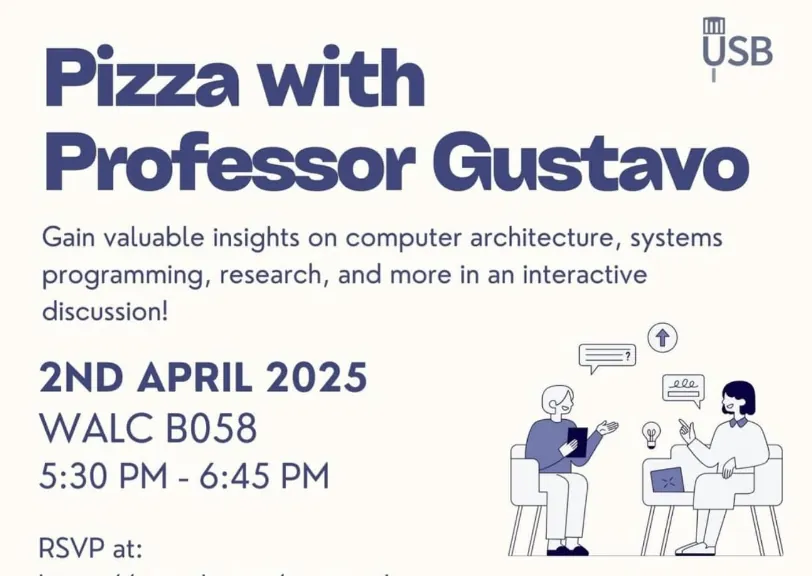

Career Resources
Career Resources works to support Purdue students by providing guidance and opportunities as they navigate their academic and professional journeys. Our programming is designed for international students, those actively searching for jobs, and students interested in building stronger connections with professors outside the classroom. We host informational student panels, networking events with companies that sponsor international students, and "Pizza with Professors" sessions where students can learn more about their favorite CS professors at Purdue in a relaxed setting.

International Career Panel
Our International Career Panel brings together upperclassmen and CS/DS alumni to share their experiences navigating the job market as international students, along with practical tips and strategies they've learned along the way. The panel offers valuable insights for all students, with a special focus on addressing the unique challenges international students face when securing internships and full-time positions.
Workshops with Companies
We also host networking events that connect students with companies, including those that sponsor international students. These events feature group networking sessions where multiple students can speak with recruiters at once and ask questions in a collaborative setting. Students also have the option to participate in 30-minute one-on-one networking sessions with recruiters for more personalized conversations.


Pizza with Professors
Pizza with Professors is an engaging event that brings students and faculty together in an informal setting. Students have the opportunity to learn about professors' teaching philosophies, research interests, and experiences in the field of computer science. Through these events, we aim to foster meaningful connections between students and faculty by providing a relaxed environment for questions, discussion, and open conversation.
Interested in working with us?
Are you a club or company interested in working with us? Fill out the form below!
Partner with Us